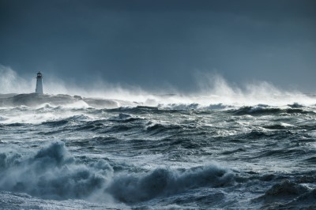

The Cirrus HPC cluster has been chosen by the Irish Marine Institute to support its R&D and operational modelling services. This includes research around oil-spill modelling, harmful algal bloom prediction, water quality modelling and marine habitat classification.
The Irish Marine Institute is the national Irish agency responsible for Marine Research, Technology Development and Innovation. The Cirrus HPC cluster is used to support the Institute’s various modelling applications, which provide simulations of ocean state to a wide variety of end users including government departments, local authorities, coast guard, the aquaculture and fishing industries, and marine leisure users.
The Irish Marine Institute seeks to assess and realise the economic potential of Ireland’s 220-million acre marine resource; promote the sustainable development of marine industry through strategic funding programmes and essential scientific services; and safeguard Ireland’s marine environment through research and environmental monitoring.
Ocean Science and Information Services, a service area of the Marine Institute, provides comprehensive services in the area of oceanography both within and external to the Institute. Key services include the operation and maintenance of the National Weather Buoy Network and the Tide Gauge Network, and various modelling applications to provide simulations of ocean state to a wide variety of end users. The Institute’s modelling services can be divided into two distinct activities:
Operational modelling undertaken on a daily basis to provide 3-6 day forecasts of sea state.
R&D modelling undertaken to provide support and advice to various government departments, local authorities and state agencies and as part of wider EU-funded research programme on subjects such as oil-spill modelling, harmful algal bloom predictions, water quality modelling, and marine habitat classification.
These modelling services require significant HPC capacity, and the challenge faced by the Institute is how to provide this capacity economically. An alternative to the considerable expense of acquiring hardware is to outsource the HPC requirement. Following a competitive tendering process the Marine Institute chose the Cirrus HPC cluster provisioned by EPCC at the University of Edinburgh to facilitate its operational and research and development modelling activities.
The Institute’s tender defined challenging operational and service parameters to support its weekly and daily modelling requirements. EPCC’s application experts worked with the Institute to pilot and benchmark the open source ROMS (http://www.myroms.org/) and SWAN (http://swanmodel.sourceforge.net/ ) models, while EPCC’s service staff collaborated in defining service agreements.
The main benefit to the Marine Institute in using the Cirrus HPC platform is the removal of the need for capital investment in HPC infrastructure. A key success factor in this collaborative relationship is aligning customer-facing service provision with an effective HPC platform. EPCC’s initial investment in the Cirrus HPC cluster has been reinforced by additional EPSRC investment to create an HPC facility capable of supporting the needs of both academia and business. Additional investment in the support and service and account management functions ensures that EPCC can respond effectively to the Marine Institute’s specific requirements.

Acknowledgement
This work used the Cirrus UK National Tier-2 HPC Service at EPCC funded by the University of Edinburgh and EPSRC (EP/P020267/1). (http://www.cirrus.ac.uk)
Contact Us
If you are interested in creating a case study highlighting your work on Cirrus then please do not hesitate to contact the support team.